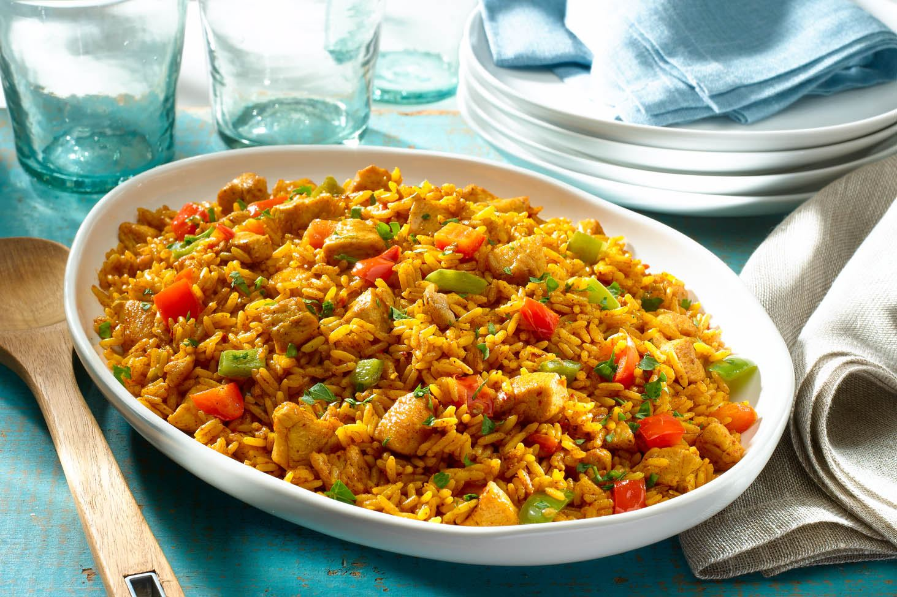

Arroz con Pollo

Descripción
El arroz con pollo es un plato típico de América Latina y España con variaciones regionales según el país. Consiste en arroz cocinado con pollo, en presas o desmechado, verduras (ají pimentón, zanahoria en cubos, apio, habichuelas, cebolla, maíz desgranado, aceitunas, arvejas, alcaparras), y sazonado con especias (laurel, tomillo, cilantro, ajo)
Ingredientes
- Arroz blanco crudo
- Cebolla larga
- Pechuga de pollo
- Zanahoria
- Arveja desgranada
- Cilantro picado
- Habichuelas
Pasos
- Comenzar por lavar el pollo. Quitarle la grasa que pudiese contener. Luego cortarlos en dados y reservar.
- Pelar y picar la cebolla y los dientes de ajo, una vez listos ponerlos en una olla con un poco de aceite.
- Cuando la cebolla y el ajo estén bien dorados, agregar los dados de pollo. Añadir el cilantro picado y dejar cocinar aproximadamente por diez minutos.
- Añadir la salsa de tomate, un poco de pimentón y la sal, remover bien. Tapar y esperar cinco minutos, luego de los cinco minutos apagar el fuego.
- En otra cazuela colocar el doble de agua que de arroz y dejar al fuego durante quince minutos. Cuando esté listo apagar y reservar.
- Por otro lado, pelar la zanahoria, lavarla y cortarla en finas tiras. En una sarten con un poco de aceite añadir la zanahoria y los guisantes, dorar por cinco minutos aproximadamente.
- Cuando el arroz, la zanahoria y los guisantes estén listos mezclarlos todos en la olla donde esté el pollo. Remover muy bien.